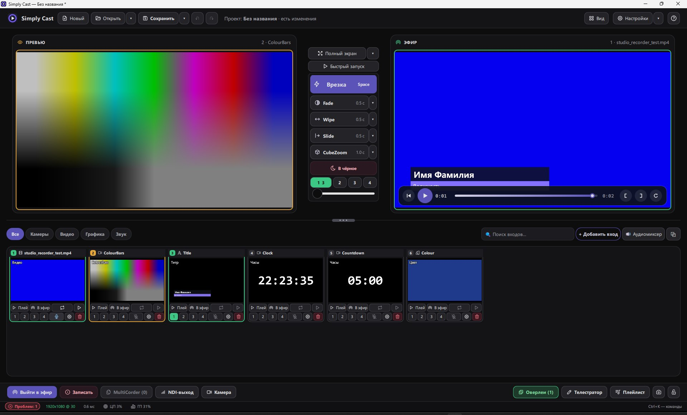
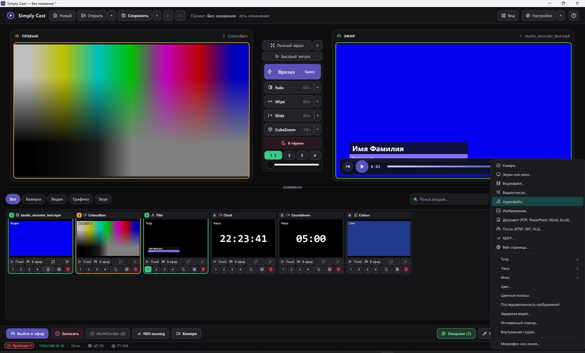

Видеомикшер для Windows без подписки.
Камеры, экран, видеофайлы, NDI и веб-страницы — в эфир, в запись и на стриминговые платформы одновременно. Для любого использования, в том числе коммерческого.
Windows 10 (2004) и 11 · 64 бита

Всё, чтобы выйти в эфир.
Привычная схема: собрали кадр в превью, перевели в эфир — переходом, T-bar или клавишей Space.
Превью и эфир
Врезка и автопереход, T-bar, «в чёрное». Оверлеи поверх эфира включаются одним нажатием.
Любые источники
Камеры, экран или окно, видео и видеосписки, картинки, документы (PDF, PowerPoint, Word, Excel), потоки RTSP/SRT/HLS, NDI, веб-страницы, титры, часы и таймеры.
Стрим и запись
Файл, RTMP(S) и SRT — сразу в несколько направлений. Кодирование на видеокарте NVIDIA или AMD, без неё — встроенным кодером Windows.
Аудиомикшер
Шины, solo, AFV, метры и громкость в LUFS. Звук синхронен с видео.
Надёжность
Камера без сигнала отпускается, стрим переподключается, проект возвращается после сбоя.
Ключи под защитой
Ключи стримов и пароли хранятся в диспетчере учётных данных Windows, а не в файле проекта.
Помощник на ИИ
Необязательная функция: микшером можно управлять текстовыми командами. Работает с Claude или любой OpenAI-совместимой сетью, по вашему собственному ключу.
Добавить можно почти всё.
Меню «Добавить вход» собирает в одном месте камеры, экран, файлы, потоки, графику и виртуальную студию.

Три шага до эфира.
Без мастеров активации и настроек на час.
Добавьте входы
Камера, экран, видеофайл или мастер первого шоу — плитки появятся сами.
Соберите кадр
Выберите вход в превью и переведите в эфир переходом или клавишей Space.
Выходите в эфир
«Выйти в эфир» или «Записать». Можно и то и другое одновременно.
Бесплатно, без регистрации.
Для личного и коммерческого использования.
| Файл | Платформа | Размер | |
|---|---|---|---|
УстановщикЯрлыки и удаление через Windows. Для парка машин есть тихая установка с ключом /VERYSILENT | Windows 10/11 x64 | 29 МБ | Скачать |
| Один файлПереносная сборка: запускается из любой папки, ничего не прописывает в системе | Windows 10/11 x64 | 41 МБ | Скачать |
| Пульт для AndroidУправление эфиром с телефона или планшета | Android | 1,5 МБ | Скачать |
Коротко о главном.
Что нужно для записи и стрима?
Любой компьютер с Windows 10/11. Simply Cast кодирует видеокартой NVIDIA или AMD, а без них — встроенным кодером Windows. Для AV1 нужна NVIDIA или AMD.
Нужен ли NDI отдельно?
Нет, движок NDI идёт в комплекте: входы и выход NDI работают сразу.
Можно ли управлять с пульта или по API?
Есть HTTP и TCP API, веб-пульт для телефона и приложение для Android. Для пультов, рассчитанных на распространённый XML-формат, — «Проект → Совместимый XML API».
Отправляет ли Simply Cast данные?
Нет. Он ищет NDI-источники в локальной сети и работает только с тем, что вы настроили.
Windows предупреждает при запуске. Это нормально?
Приложение пока без платной цифровой подписи, поэтому SmartScreen может показать предупреждение. Нажмите «Подробнее → Выполнить в любом случае».
Есть ли версия для Mac?
Пока нет.
Соберите первый эфир за пару минут.
Скачайте, добавьте камеру и нажмите «Выйти в эфир».